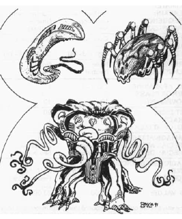

1065
| Common | Guardian | |
|---|---|---|
| Climate/Terrain: | Spelljammer | Control room |
| Frequency: | Common | Unique |
| Organization: | Squad | Solitary |
| Activity Cycle: | Continuous | Continuous |
| Diet: | None | None |
| Intelligence: | High (13-14) | Genius (17-18) |
| Treasure: | None | None |
| Alignment: | Neutral | Neutral |
| No. Appearing: | 1 or 1-8 | 1 |
| Armor Class: | 3 | -3 |
| Movement: | 12 | 12 |
| Hit Dice: | 5 | 20 |
| THAC0: | 16 | 1 |
| No. of Attacks: | 2 | 2 |
| Damage/Attack: | 1-8 | 3-18 |
| Special Attacks: | See below | See below |
| Special Defenses: | See below | See below |
| Magic Resistance: | 40% | 60% |
| Size: | S or M (3-5’) | L (10’ high) |
| Morale: | Fanatlc (17-18) | Fearless (19-20) |
| XP Value: | 5,000 | 23,000 |
The shivaks are only found aboard the Spelljammer, and they are constructed (grown) in a manner similar to the smalljammers. In the shivaks’ case, they are constructed in the shivak terminal (Area #15) rather than In the gardens (Area #2) llke the smalljammers. The shivak grow in pods out of the lifeless corridors.
When shivaks are destroyed or wear out, more are constructed. Those that are not immediatly needed are kept in storage, where they are maintained on small amounts of energy from the shlp. There are about 500 shivaks on board the ship at any one time.
Shivaks resemble headless ellipsoids that have limbs. The limbs are arranged in such a manner that varieties of shivaks resemble various races aboard the ship.
The surface of a shivak appears to be covered by a thick gray leather. However, this leatherlike exterior extends fully to the core of a shivak — in other words, shivaks lack organs in the known sense. The limbs are made of similar material, and they are what allow the shivaks to maneuver. (Shivaks move forward, backward, and sideways at will, much as if they were on rollers.)
Each variety of shivak also has a special attack form that it may use at will as described below.
The types of common shivak include the followlng:
Combat: The shivaks in battle fight as a unified whole, regardless of their appearance. Their tactics are generally straightforward, consisting of overwhelming their opponents with numbers, then carting them off. Their main function seems to be to keep trespassers out of areas of the Spelljammer that are off limits.
The shivaks are apparently connected to both the ship and to each other, for attacking one shivak typically brings others in quick succession (usually 1-8 additional shivaks will appear 3-6 rounds after the initial attack).
The shivaks have been given only limited orders, however, and they will only attack if they are attacked, if a creature is in a restricted area, or if they are prevented from doing their normal tasks, which include food delivery and dismantling ships. Otherwise they tend to leave the other races on board alone and are in turn left alone by other races.
The shivaks are immune to illusion and light-based attacks. They cannot be poisoned, polymorphed, or paralyzed, nor may they be charmed or otherwise affected by enchantment spells, including sleep. They are immune to their own attack forms, including those of other shivaks.
The shivaks do not see in the traditional sense, but rather they emanate a continuai detect life. Otherwise invisible living creatures stand out brightly to them, as do those masked by illusion spells. They know the buildings and warrens of the ship by heart and can move smoothly around inanimate objects. However, animate, unliving creatures (such as undead, golems, and clockwork horrors) are invisible to them. They cannot attack what they cannot see, though they may flail around at -4 to hit.
Habitat/Society: The shivaks have no real society and are little more than extensions of the wlll of the Spelljammer itself. Unless specifically commanded otherwise by the captain, they will continue to perform their normal duties.
When under the control of the captain, they will respond to his or her orders as long as those orders do not directly contradict the shivaks’ functions. (For instance, the captain cannot order the shivaks to not attack a trespasser found in the warrens.)
Ecology: The shivaks are “grown” in the shivak terminal, far from the light of the gardens, in great pods hanging from the wall. Unlike the smalljammers, the shivaks’ only requirement for development is the presence of a spelljamming helm, whlch will create 1-10 new shlvaks. Any spelljammlng helms that are found will be taken back to the terminal for future use.
It takes only a few days for the terminal to create these shivaks once it has a new helm. The process is simllar to the creation of the smalljammers upon the arrival of a new captain. The spelljamming helms, however, are consumed in the process and cannot be regained.
Guardlan Shivak
The guardian shivak is the largest of the shivaks and is found only in the control room. (The control room is an area that appears on the Spelljammer only when a prospective captain comes on board; the area randomly shifts position throughout the ship and is seldom found in the same place twice in a row. The adventurer must defeat the guardian shivak to bond with the ship and become captain.)
The guardian shivak is built to encompass the worst fears of the previous captain. As such, it strongly resembles the physical form those fears take (as opposed to the elliptical shape of the other shivaks). The current guardian shivak resembles a gigantic mind flayer. It Is equipped with a psionic blast similar to that of a mind flayer.
The guardian shivak is made of the same leathery material as are the common shivak, however, and it too has no apparent internal organs. The guardian has all the resistances and immunities of the other shivaks.
The guardian shivak exists only when an ultimate helm is carried on board the Spelljammer. This shivak is developed specifically for the purpose of challenging the possessor of the helm.
If the helm is destroyed or carried off the ship, the guardian shivak is absorbed back into the ship itself. It will reform each time an ultimate helm is present, and It will continue to be in the form that encompasses the fears of the previous captain, regardless of how many times the guardian shivak is called upon to appear.
◆ 1626 ◆